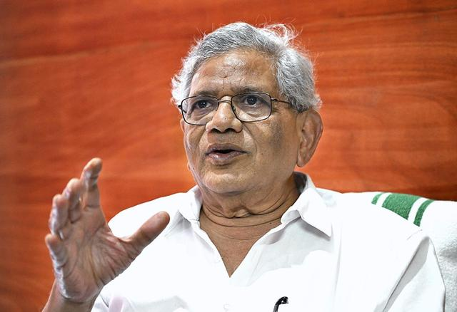
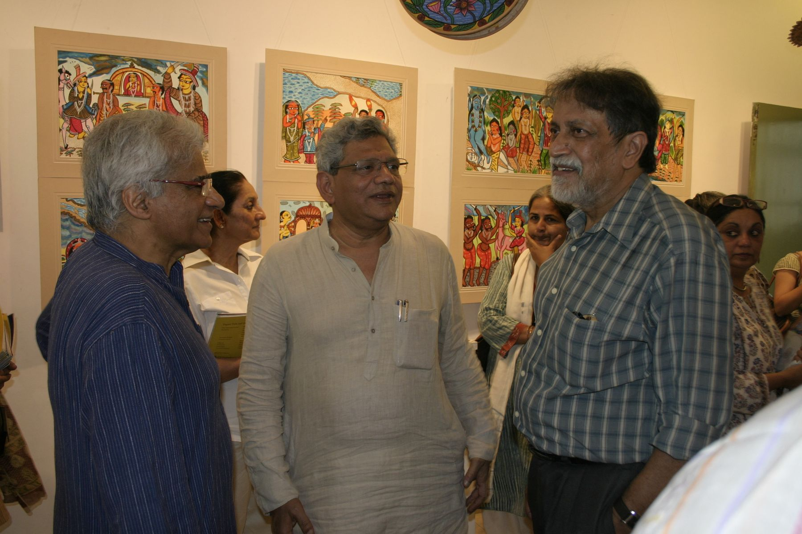
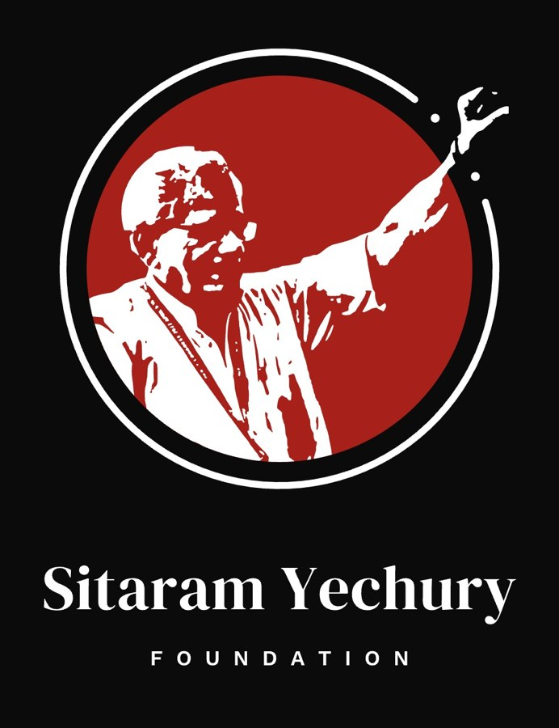

The Sitaram Yechury Foundation
“The ship sails on. The struggle continues.” The Foundation exists so that the voice, wisdom and warmth of Comrade Sitaram continue to inform the struggles of our time.
“The ship sails on. The struggle continues.” The Foundation exists so that the voice, wisdom and warmth of Comrade Sitaram continue to inform the struggles of our time.

The Sitaram Yechury Foundation (SYF) is a not-for-profit charitable public trust set up in memory of Sitaram Yechury — General Secretary of the CPI(M), parliamentarian and public intellectual.
Sitaram Yechury’s political journey — shaped in the struggles of JNU and carried forward through the CPI(M) — was one of conviction, intellect and deep political commitment. Even in the final months of his life his work never paused: he was preparing the draft report for the Party’s 24th Congress when he was taken from us on 12 September 2024.
He understood communism as a struggle encompassing the whole of human life — political economy and history, but also literature, cinema, music and sport. The Foundation takes up that breadth, working on the questions he devoted his life to: democracy and civil rights, secularism, social justice and equity, and the constitutional goal of a socialist secular democratic republic.

Promoting education and public awareness on democracy and civil rights, and building public support for the constitutional goal of making India a “socialist secular democratic republic”.
Setting up research centres and a digital archive on Left and progressive movements in India and Asia.
Hosting lectures, seminars and conferences on democracy, secularism, social justice and equity — including the annual Sitaram Yechury Memorial Lecture.
Supporting cultural expression, in the spirit of his lifelong engagement with music, literature, cinema and sport.
Training programmes and fellowships for youth, educators and civic leaders. Our first call for young scholars drew 168 entries from students across India.
Working with universities, research institutions and civil society groups.
The Foundation is building a corpus fund to sustain its lectures, research, archive and fellowships, and welcomes contributions. Please write to us for details on how to contribute.
Write to usSitaram, arm raised mid-speech, within a red circle that is left open — an unfinished journey that others now carry forward.
Watch the unveiling